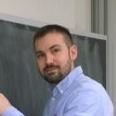

Jeffrey A. OregeroUniversity of KansasDepartment of Mathematics 1460 Jayhawk Blvd. Lawrence, KS 66045, USA Office: 541 Snow Hall E-mail: oregero [at] ku [dot] edu |
 |
Currently, I'm an Adams Visiting Assistant Professor at the University of Kansas in Lawrence, KS. Prior to that I held postdoctoral positions at the University of Central Florida in Orlando, FL, and at the Mathematical Sciences Research Institute in Berkeley, CA (now the Simons Laufer Mathematical Sciences Institute). In 2021 I received my PhD in Mathematics from the State University of New York at Buffalo under the supervision of Professor Gino Biondini. My research is broadly concerned with the analysis of partial differential equations (PDEs) arising in mathematical physics with a particular interest in nonlinear dispersive equations, integrable systems, spectral and inverse spectral theory, and singular asymptotics. Recently, I've been studying problems related to (i) modulational instability (or Benjamin-Feir instability) of periodic wave trains, (ii) long-time asymptotic analysis of integrable equations and their non-integrable perturbations, and (iii) the description of random nonlinear waves in physical systems modeled by soliton gases.